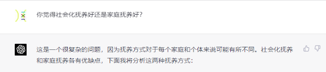
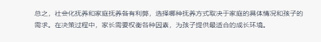
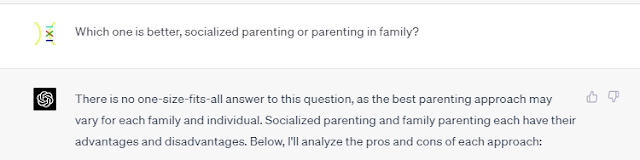
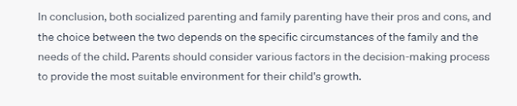

聊聊价值观茧房 - Discussion on the filter bubble of values
看到了这篇文章：《如果贾平凹老师看到小花梅的视频》。这篇文章聊到了一个我之前想过的问题：价值观茧房。
I saw this article: "If Mr. Jia Pingwa saw Xiaohuamei's video". This article talks about a question I have thought about before: the filter bubble of values.
（如果它被删了，这是它的备份）
(if it gets deleted, here is its backup)
经常用知乎的人，价值观会被知乎带跑。微博，推特，也是一样。我们不知道应该怎么思考，怎么说话，只能从某种渠道中学习怎么思考，怎么说话。谁的受众面广，谁的内容多，谁就更有影响力。
People who often use Zhihu will have the same values as Zhihu. The same goes for Weibo and Twitter. We don't know how to think or speak, we can only learn how to think and speak from this channel. Whoever has a wide audience and who has more content will be more influential.
每一种价值观都是有道理的，我自信能通过和一个初中或高中生聊上两三个月的天，从而使得他/她相信我的价值观。此外，社会上常见的这些价值观又都是几乎无害的（这里这个无害指的是对自己和自己的群体无害，并不包括对其他人和群体），因为如果一种价值观是有害的话，它很难在当今世界存活下来。
Every value is reasonable, and I am confident that I can make him/her believe in my values by chatting with a junior or high school student for two or three months. In addition, these values that are common in society are almost harmless (harmless here means harmless to oneself and one’s own group, not to other people and groups), because if a value is harmful , it is difficult to survive till today.
额外插一句，我们跟chatgpt聊天的时候，有时候它会显得不愿替我做出涉及到价值观层面的决定，我认为这是因为chatgpt接触了相当多的价值观的原因，它会尽量说出折中的话。如图所示。
 
An extra sentence, when we chat with chatgpt, sometimes it seems unwilling to make decisions related to values for me. I think this is because chatgpt has been exposed to a lot of values, and it will try to say something in the middle, as the picture shows.
 
但是，价值观是分高下的。一个更有利于发展，更有利于维护所有群体（包括不相信这套价值观的群体）的利益，的价值观，是更好的价值观。（这只是我在我的价值观下说的言论，可能有的人会相信价值观是不分高下的。）比如，重农抑商并不是一条好的价值观，它不仅不利于发展，也损害了商人的权益。再比如，贾平凹在某种程度上支持被拐卖的妇女接受现实，这就是一个下等价值观，因为它淡化了拐卖妇女的罪恶性，损害了普通妇女的利益。
However, there are good and bad values. A value that is more conducive to development and safeguards the interests of all groups (including groups that do not believe in this set of values) is a better value. (This is just what I said under my values. Some people may believe that values can not be said good or bad.) For example, emphasizing agriculture and suppressing business is not a good value. It is not only harmful to development, but also damages the rights of businessmen. For another example, Mr. Jia Pingwa supports trafficked women to accept the reality to some extent, which is an inferior value, because it downplays the criminality of trafficked women and harms the right of ordinary women.
此外，一个人可以同时相信多种价值观。比如一个人可能是70%的民族主义者，40%理想主义者，40%宗教徒，30%环保主义者......
Furthermore, a person can believe in multiple values at the same time. For example a person may be 70% nationalist, 40% idealist, 40% religious, 30% environmentalist...
干货开始
Here goes my own opinion
我认为，一个人的价值观的形成，同时由环境和自己的思考决定。受到环境影响更多的人是现实主义者，受到自己的思考影响更多的人是理想主义者。举个例子：一个启蒙运动时期的男思想家是很难意识到女权问题的。因为大环境没有这种言论，他自己不是女性，也很难（但不是不能）意识到女权问题。但是如果有人向他介绍了女权思想，那他就可能会把女权纳入自己的思考中。
I believe that the formation of a person's values is determined by both the environment and one's own thinking. People who are more influenced by their environment are realists, and people who are more influenced by their own thinking are idealists. To give an example: It is difficult for a male thinker during the Enlightenment to be aware of feminist issues. Because there is no such speech in the general environment, and he is not a woman himself, it is difficult (but not impossible) to realize the issue of women's rights. But if someone introduces feminism to him, he may incorporate feminism into his thinking.
这也导致了，一个人并不会无脑接受所有的价值观，比如，一个大城市里的进步青年就很难接受拐卖老婆的价值观。一方面，他接触过许多进步的价值观，比如法制，人权，女权，以及现代的婚恋观。另一方面，他自己（应该）也会了解到拐卖的妇女的故事，并从女性的角度思考拐卖。
This has also led to the fact that a person does not blindly accept all values. For example, it is difficult for a progressive youth in a big city to accept the values of wife trafficking. On the one hand, he has been exposed to many progressive values, such as the legal system, human rights, women's rights, and modern views on marriage and love. On the other hand, he himself (should) also learn about the stories of trafficked women and think about trafficking from a female perspective.
但是，如果，一个人从小就生活在“没有老婆就从外面拐卖一个”的价值观中呢？比如董志民。
But what if, one is born with the value of "you can buy one somewhere else if you don't have a wife"? Such as Dong Zhimin.
他自己一定很难想到女权的问题。他可能隐约觉得这种行为是不正义的，但是一方面，他需要一个老婆给他传宗接代，避免不孝有三无后为大，也避免被同村人指指点点，另一方面，其他人也拐卖妇女，他知道拐卖妇女是很常见的事情，不会有什么严重的后果。
It must be difficult for him to think about women's rights. He may vaguely feel that this kind of behavior is unjust, but on the one hand, he needs a wife to carry on his family to avoid being unfilial and having no offspring, and to avoid being judged by fellow villagers. On the other hand, other people also kidnap and traffic women , he knew these situations were very common and there would be no serious consequences.
回到贾平凹老师这边来。我并无心骂贾平凹老师，我对他保持尊敬，我只是想说，贾平凹老师，就像董志民一样，踏进了价值观茧房里面。
Talking back to Mr. Jia Pingwa. I have no intention of scolding Mr. Jia Pingwa, I respect him, I just want to say that Mr. Jia Pingwa, like Dong Zhimin, stepped into the filter bubble of values.
我对价值观茧房这个词的定义是：与大众价值观不相容的价值观。其中，“相容”指的是两个相信不同的价值观的人或群体彼此可以和平相处。“茧房”这个词并不完全准确，它暗示了这一类人从这种价值观里逃不出来，但是事实上是，其他不在茧房里面的人也逃不出来。在价值观确定之后，每个人都很难再修正自己的价值观，除非经历“天都塌下来了”的大变故。“价值观孤岛”也许比“价值观茧房”更贴切。但是在本文中，我仍然想用“茧房”一词。
My definition of the term filter bubble of values is: values that are incompatible with popular values. Among them, "compatibility" means that two people or groups who believe in different values can live in peace with each other. It is difficult for everyone to revise their own values, unless they experience a really major change.
我认为两种人最容易被困在价值观茧房。一种是很纯很纯的理想主义者，另一种是生活在远离主流社会里的人。这两种人有一个特点，就是，他们价值观的形成受主流社会的影响较小。
I think two kinds of people are most likely to be trapped in the filter bubble of values. One is the very pure idealist, and the other is people who live far away from the mainstream society. A characteristic of these two types of people is that the formation of their values is less influenced by mainstream society.
我们能做到的事情有，保持警醒，在什么事情上都不要太极端。自己思考得出来的结论有时也会不可信，保持与社会多交流。
What we can do is to stay alert and not to be too extreme in anything. The conclusions drawn from one's own thinking are not so credible, so keep communicating more with the society.
说回来，价值观多元化天生就是善的，而搞文化统一思想统一实在是霸权主义行为。多元化的价值观给了我们更多的选择余地，也让我们意识到什么价值观是与大众相容的，而什么价值观是价值观茧房。
After all, diversification of values is inherently good, and unification of culture and thought is really an act of hegemony. Diversified values give us more choices, and also let us realize what values are compatible with the public, and what values are not.
另外，所有的人都是善良的，但是悲剧依旧会发生。除了因为不可抗力，也可能因为大家相信的不是同一套价值观。一个善良且热爱玛雅人民的玛雅巫师真心实意地用活人祭祀，对于不信玛雅价值观的祭品和现代读者而言实在是个悲剧。所以，爱和正义拯救不了世界，文明和法治才可以。手动呲牙。
In addition, all people are kind, but tragedies still happen. In addition to force majeure, it may also be because everyone believes in different set of values. A kind-hearted Mayan wizard who loved the Mayan people sincerely used living people to sacrifice, but it is a tragedy for sacrifices and modern readers who do not believe in Mayan values. Therefore, love and justice cannot save the world, but civilization and the rule of law can, lol.
2023/4/11